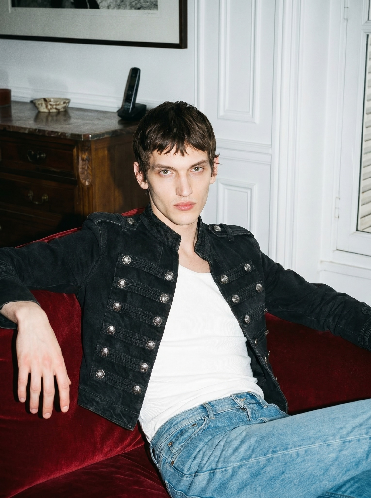
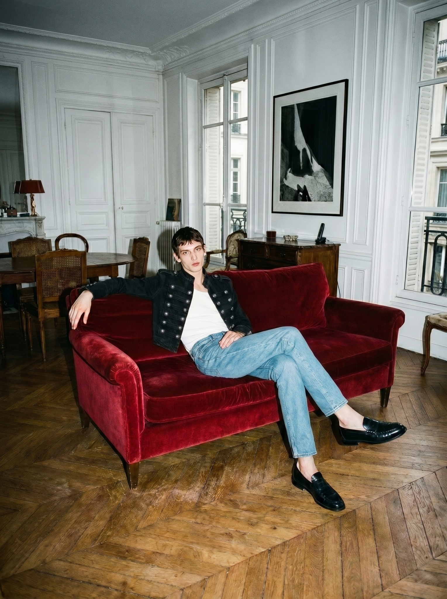
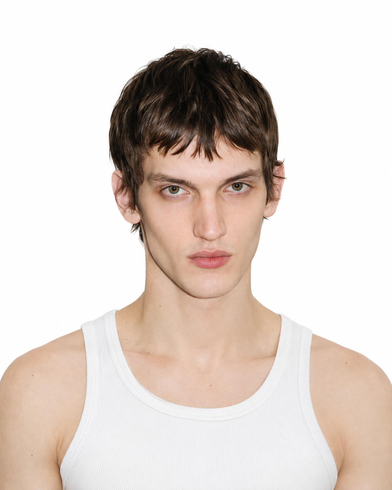
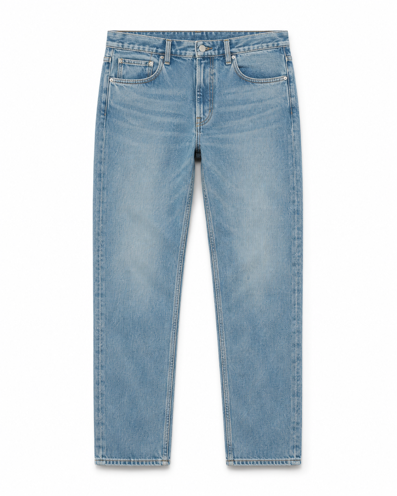
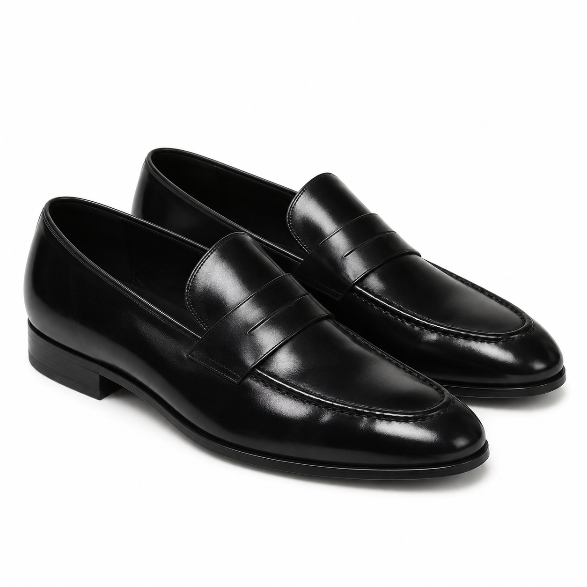

AI-фотосессия в парижской квартире





- Создание AI-модели — разработал внешность персонажа и создал его базовый портрет.
- Перенос одежды и обуви — воссоздал на модели жакет, джинсы и лоферы по референсам.
- Создание локации — сгенерировал интерьер парижской квартиры.
- Интеграция модели в сцену — вписал модель в готовом образе в интерьер.
- Сохранение узнаваемости — сохранил черты лица и причёску на общем и крупном планах.